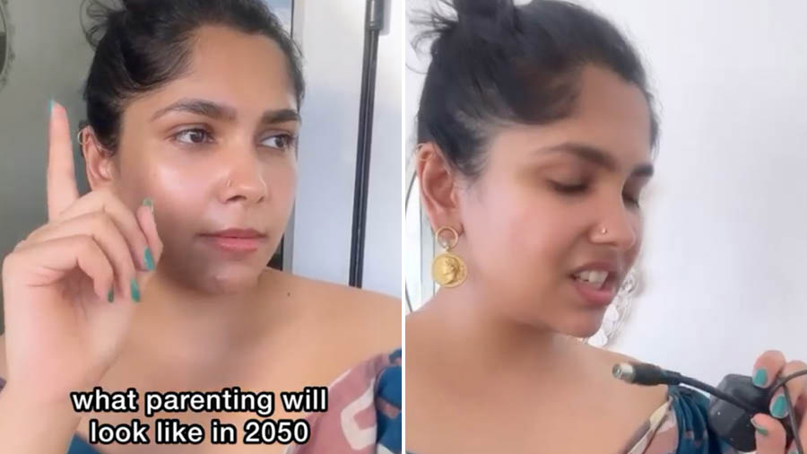

Step into the Future of Parenting with @thatindianchick_'s Hilarious Glimpse into 2050

It's the year 2050 and parents have fully embraced technology in raising their children. Parenting has become a whole new ball game and @thatindianchick_ has given us a hilarious glimpse into what the future of parenting might look like.
Meet the Singhs
The Singhs have two children, Aarav and Avani. Both parents work full time and have a busy schedule. They rely heavily on technology and AI to help them with parenting tasks. They have programmed their home assistant, Alexa, to wake the kids up, get them ready for school, and even make their breakfast.
One day, Mrs. Singh receives a notification on her smartwatch that Aarav has been absent from school. She quickly checks his status on her Parenting App and finds out that he had a fever. The app had already forwarded this information to Aarav's school and his class teacher. Mrs. Singh simply had to confirm that Aarav was taking the necessary medication for his fever and the app took care of the rest.
The Singhs have fully embraced the future of parenting and here are some quantifiable examples of how:
the Future of Parenting
- Parenting Apps: Parenting Apps are becoming more complex, reliable and interactive. With the help of AI, these apps are able to predict a child's needs, schedule activities, and send reminders for vaccinations and appointments. Parents can monitor their child's academic progress, social behavior, and health all from the comfort of their smartphone.
- Smart Homes: Smart homes have become the norm in 2050. Homes are equipped with sensors that monitor a child's movements and habits. Everything from sleep patterns to eating habits are recorded and analyzed to help parents make informed parenting decisions. Smart homes are also equipped with robots that can entertain children and help them with homework.
- Virtual Reality (VR) Parenting: Virtual Reality has taken parenting to a whole new level. Parents can now simulate real-life scenarios to help their children prepare for challenging situations. They can simulate job interviews, public speaking, and other life skills. VR is also used to help children with anxiety and phobias overcome their fears.
The Challenges of Future Parenting
As with all new technology, there are challenges that arise and the future of parenting is no exception. Here are some challenges that parents in 2050 might face:
- Is technology replacing human interaction? With the rise of AI and robots, parents may rely too heavily on technology to raise their children.
- Is privacy at risk? With the amount of data collected by parenting apps and smart homes, privacy concerns are bound to arise.
- What about safety and security? With the internet of things, there is a greater risk of hackers gaining access to personal information and even controlling smart homes.
The Future of Parenting in Three Points
The future of parenting is inextricably linked to technology and AI, but it is important not to rely too heavily on these tools. Here are three key takeaways for parents:
- Be mindful of the risks and benefits of technology. While technology can be incredibly helpful, it is important to be aware of the potential downsides.
- Make time for human interaction. With the rise of robots and AI, it is important to remember the value of human interaction in parenting.
- Stay informed. As technology continues to evolve, it is important to stay up-to-date on the latest developments and potential risks.
Personal anecdotes and case studies can illustrate the potential of technology in parenting. For example, parents who work long hours might benefit from a smart home that can help them monitor their child's progress and needs. However, it is important to remember that technology is a tool, not a replacement for human interaction.
In conclusion, the future of parenting is exciting and filled with possibilities. While technology and AI bring new tools and opportunities, it is important to remember the value of human connection and interaction. As we look towards the future, let us keep these principles in mind and embrace the potential of technology in parenting.
References
- https://www.theguardian.com/lifeandstyle/2019/feb/01/the-future-of-parenting-smart-homes-ai-virtual-reality
- https://www.popularmechanics.com/technology/infrastructure/a30741668/future-smart-homes/
Hashtags
- #FutureOfParenting
- #AIinParenting
- #VirtualRealityParenting
SEO Keywords
- Future of Parenting
- Technology in Parenting
- AI and Parenting
Article Category
Parenting and Technology
Curated by Team Akash.Mittal.Blog
Share on Twitter Share on LinkedIn